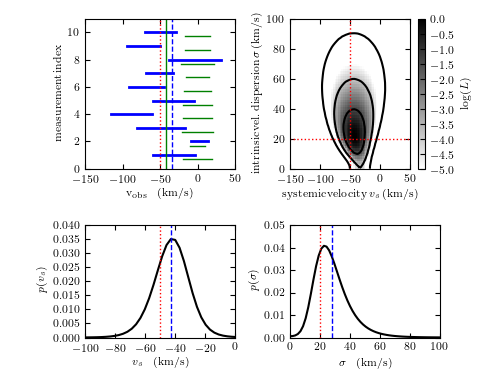

Hierarchical Bayes modeling for Gaussian distribution with Gaussian drrors¶
Figure 5.27 An example of hierarchical Bayes modeling: estimate systemic velocity and velocity dispersion for a set of stellar radial velocity measurements. It is assumed that measurement uncertainties are known and Gaussian, and that true velocities are centered on an unknown systemic velocity and have a Gaussian scatter given by unknown velocity dispersion.
{kind=link}
# Author: Zeljko Ivezic
# License: BSD
# The figure produced by this code is published in the textbook
# "Statistics, Data Mining, and Machine Learning in Astronomy" (2019)
# For more information, see http://astroML.github.com
# To report a bug or issue, use the following forum:
# https://groups.google.com/forum/#!forum/astroml-general
import numpy as np
from matplotlib import pyplot as plt
from astroML.plotting.mcmc import convert_to_stdev
#----------------------------------------------------------------------
# This function adjusts matplotlib settings for a uniform feel in the textbook.
# Note that with usetex=True, fonts are rendered with LaTeX. This may
# result in an error if LaTeX is not installed on your system. In that case,
# you can set usetex to False.
from astroML.plotting import setup_text_plots
setup_text_plots(fontsize=8, usetex=True)
def gaussgauss_logL(xi, ei, mu, sigma):
"""Equation 5.63: gaussian likelihood with gaussian errors"""
ndim = len(np.broadcast(sigma, mu).shape)
xi = xi.reshape(xi.shape + tuple(ndim * [1]))
ei = ei.reshape(ei.shape + tuple(ndim * [1]))
s2_e2 = sigma ** 2 + ei ** 2
return -0.5 * np.sum(np.log(s2_e2) + (xi - mu) ** 2 / s2_e2, 0)
def getExpStD(x, p):
"""given p(x), compute expectation value and std. dev."""
Ex = np.sum(x * p) / np.sum(p)
Sx = np.sqrt(np.sum((x - Ex) ** 2 * p) / np.sum(p))
return Ex, Sx
# ------------------------------------------------------------
np.random.seed(2) # for repeatability
N = 10 # number of measured stars
mu_true = -50.0 # km/s, true systemic velocity
sigma_true = 20.0 # km/s, true velocity dispersion
ei = 10 + 40 * np.random.random(N) # n.b. heteroscedastic errors
# generate measurements
xi = np.random.normal(mu_true, np.sqrt(sigma_true ** 2 + ei ** 2))
wi = 1 / ei ** 2 / np.sum(1 / ei ** 2)
# weighted mean
wmean = np.sum(wi * xi)
# uncertainty of weighted mean
wmeane = 1 / np.sqrt(np.sum(1 / ei ** 2))
# other stats
medvel = np.median(xi)
meanvel = np.mean(xi)
velstd = np.std(xi)
# define the grids and compute logL
sigma = np.linspace(0.01, 120, 70)
mu = np.linspace(-150, 50, 70)
logL = gaussgauss_logL(xi, ei, mu, sigma[:, np.newaxis])
logL -= logL.max()
L = np.exp(logL)
p_sigma = L.sum(1)
p_sigma /= (sigma[1] - sigma[0]) * p_sigma.sum()
p_mu = L.sum(0)
p_mu /= (mu[1] - mu[0]) * p_mu.sum()
#------------------------------------------------------------
# plot the results
fig = plt.figure(figsize=(5, 3.75))
fig.subplots_adjust(left=0.1, right=0.95, wspace=0.24,
bottom=0.15, top=0.9)
fig.add_axes((0.58, 0.55, 0.30, 0.40))
plt.imshow(logL, origin='lower',
extent=(mu[0], mu[-1], sigma[0], sigma[-1]),
cmap=plt.cm.binary,
aspect='auto')
plt.colorbar().set_label(r'$\log(L)$')
plt.clim(-5, 0)
plt.contour(mu, sigma, convert_to_stdev(logL),
levels=(0.683, 0.955, 0.997),
colors='k')
plt.xlabel(r'${\rm systemic \, velocity \, } v_s \, {\rm (km/s)}$')
plt.ylabel(r'${\rm intrinsic \, vel. \, dispersion \,} \sigma \, {\rm (km/s)}$')
plt.xlim(-150, 50.0)
plt.ylim(0, 100)
# plot true values
plt.plot([mu_true, mu_true], [0, 100.0], ':r', lw=1)
plt.plot([-200, 200.0], [sigma_true, sigma_true], ':r', lw=1)
# second axis: marginalized over mu
ax2 = fig.add_axes((0.17, 0.1, 0.3, 0.30))
ax2.plot(mu, p_mu, '-k', label='')
ax2.set_xlabel(r'$v_s$ \, {\rm (km/s)}')
ax2.set_ylabel(r'$p(v_s)$')
ax2.set_xlim(-100, 0.0)
ax2.set_ylim(0, 0.04)
plt.plot([mu_true, mu_true], [0, 100.0], ':r', lw=1)
Ev, Sv = getExpStD(mu, p_mu)
plt.plot([Ev, Ev], [0, 100.0], '--b', lw=1)
# plot the marginalized distribution for sigma
ax3 = fig.add_axes((0.58, 0.1, 0.3, 0.30))
ax3.plot(sigma, p_sigma, '-k', label='')
ax3.set_xlabel(r'$\sigma$ \, {\rm (km/s)}')
ax3.set_ylabel(r'$p(\sigma)$')
ax3.set_xlim(0, 100.0)
ax3.set_ylim(0, 0.05)
plt.plot([sigma_true, sigma_true], [0, 100.0], ':r', lw=1)
Ed, Sd = getExpStD(sigma, p_sigma)
plt.plot([Ed, Ed], [0, 100.0], '--b', lw=1)
# plot data
ax4 = fig.add_axes((0.17, 0.55, 0.3, 0.40))
ax4.set_xlabel(r'${\rm v_{obs}}$ \, {\rm (km/s)}')
ax4.set_ylabel(r'${\rm measurement \, index}$')
ax4.set_xlim(-150, 50)
ax4.set_ylim(0, 11)
# mark +-error ranges
for i in range(0, N):
xL = xi[i] - ei[i]
xR = xi[i] + ei[i]
plt.plot([xL, xR], [i + 1, i + 1], 'b', lw=2)
# mark true systemic velocity and weighted mean of data
plt.plot([wmean, wmean], [0, 100.0], '--b', lw=1)
plt.plot([mu_true, mu_true], [0, 100.0], ':r', lw=1)
# mark posterior range for each star
mup = Ev
sigp = Ed
for i in range(0, N):
sig0 = 1 / np.sqrt(1 / sigp ** 2 + 1 / ei[i] ** 2)
mu0 = (mup / sigp ** 2 + xi[i] / ei[i] ** 2) / sig0 ** 2
xL = mu0 - sig0
xR = mu0 + sig0
plt.plot([xL, xR], [i + 0.7, i + 0.7], 'g', lw=1)
# and expectation value for systemic velocity
plt.plot([mup, mup], [0, 100.0], 'g', lw=1)
plt.show()